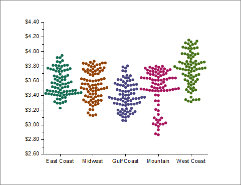

<h1 class="firstheading">ビースウォームプロット</h1>
<p class="urlname" style="display: none;">Beeswarm-Plot</p>
<p><br /></p>
<dl>
<dd><a class="image"></a></dd>
</dl>
<div id="toc" class="toc">
<div id="toctitle">
<h2>目次</h2>
</div>
<ol>
<li class="toclevel-1 tocsection-1"><a href="#Data_Requirements"><span class="tocnumber">1</span> <span class="toctext">要求されるデータ</span></a></li>
<li class="toclevel-1 tocsection-2"><a href="#Creating_the_Graph"><span class="tocnumber">2</span> <span class="toctext">グラフ作成操作</span></a></li>
<li class="toclevel-1 tocsection-3"><a href="#Template"><span class="tocnumber">3</span> <span class="toctext">テンプレート</span></a></li>
<li class="toclevel-1 tocsection-4"><a href="#Notes"><span class="tocnumber">4</span> <span class="toctext">ノート</span></a></li>
</ol>
</div>
<h2><a name="Data_Requirements" id="Data_Requirements"></a><span class="mw-headline">要求されるデータ</span></h2>
<p>1列以上のワークシート列を選択します。</p>
<h2><a name="Creating_the_Graph" id="Creating_the_Graph"></a><span class="mw-headline">グラフ作成操作</span></h2>
<ol>
<li>データを選択します。</li>
<li>メニューから、<span class="menu"><b>作図：統計：ビースウォームプロット</b></span>を選択します。</li>
</ol>
<dl>
<dd><a class="image"></a></dd>
</dl>
<h2><a name="Template" id="Template"></a><span class="mw-headline">テンプレート</span></h2>
<p>Beeswarm.OTPU (Originのプログラムフォルダにインストールされています。)</p>
<h2><a name="Notes" id="Notes"></a><span class="mw-headline">ノート</span></h2>
<ul>
<li>データのY列は、それぞれ個別の群として表されます。列ロングネームがある場合、X軸ラベルになり、ない場合はショートネームが使用されます。</li>
<li>ビースウォームプロットは、<a href="../../UserGuide/UserGuide/Customizing_the_Box_Chart_Box_Tab_Controls.html" title="ユーザガイド:『ボックス』タブの編集オプション">ボックスの<b>種類</b> = <b>点列</b></a>およびデータ<a href="../../UserGuide/UserGuide/Customizing_the_Box_Chart_Data_Tab_Controls.html" title="ユーザガイド:『データ』タブの編集オプション"><b>種類</b> = <b>ドット</b>、<b>ポイント配置</b> = <b>群</b></a>に設定されているボックスプロットの一種です。</li>
</ul>
